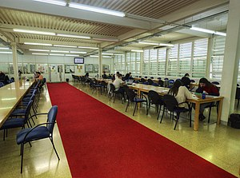
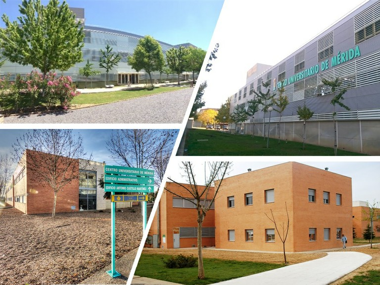

Bienvenidos a la biblioteca online del Centro Universitario de Merida


Novedades y sitios de interes
Información
Correo:infocume@unex.es
Teléfono: 924 387 068
Dirección: Av. Santa Teresa de Jornet, 38. 06800 Mérida
Horarios:
Mañanas: 8:30 a 14:30
Tardes: 15:30 a 21:30
Bibliografia: Para esta entrega se han utilizado las notas realizadas en clase junto a las diapositivas, ademas para la creacion del minijuego de ahorcado se ha utilizado ChatGPT y GitHub como ayuda extra